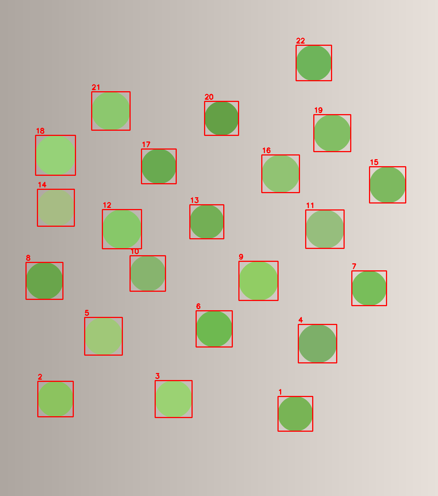

开始
这一部分说明练习准备、编译链接、编辑器配置与第一个完整例子：
读完以后，读者应当能用一条 g++ 命令编译单文件 OpenCV 程序，
在工程变大时用 CMakeLists.txt 组织构建，在 VS Code 中修复
头文件的 IntelliSense 报错，读入一张图、显示并保存结果，并运行一个
数绿球的完整流程。
无。只需要能读懂 C++ 的变量、循环、函数与 std::vector，
能用 g++ 编译一个源文件。课程不重复讲这些语法；
需要时先读 C++ 基础课。
0.1练习目录与代码约定
这一课准备练习目录，并说明课里的代码、输出与图片怎么读。 课程结构与各课要求见 课程首页。
练习目录
课程文件夹（本页所在目录）包含 示例代码 与 素材
两个文件夹。先把它们复制到 /tmp/opencv-course，之后的命令都在
副本里执行；课程文件夹保持只读，误改后可以重新复制。
在包含这两个文件夹的目录下执行：
rm -rf /tmp/opencv-course
mkdir -p /tmp/opencv-course
cp -r 示例代码 素材 /tmp/opencv-course/
cd /tmp/opencv-course/示例代码
示例程序使用 ../素材/synth_balls.png 这样的相对路径，所以
示例代码 与 素材 必须一起复制，并且保持同级。
运行程序时，当前目录应当是 /tmp/opencv-course/示例代码；
可以用 pwd 确认。程序写出的结果图也落在当前目录。
这个目录只是副本，误改后重新执行上面的命令即可；课程不要求网络，
也不需要管理员权限。
代码与输出约定
C++ 例子都是完整程序，包含头文件、main 函数与
return 语句。读者应当先照着编译运行，对照输出，再读代码与说明；
编译与运行方法见 0.2。
代码块上方的标签写明语言与程序名，输出块上方写明“真实输出”。 终端输出里每次都会变化的部分（版本号、时间、帧率、耗时）会在标签或正文中说明； 没有说明的，按原样对照即可。结果图由页面上的程序生成，图注说明看什么。
课程中的程序名、图片名与视频名尽量使用 ASCII 字符，避免路径编码问题；
页面标题、图注与说明使用中文。代码统一使用 C++17，OpenCV 符号用
cv:: 显式限定，标准库用 std::，不写
using namespace。
0.2环境与链接
课程使用已经就绪的 OpenCV 与编辑器。本课先确认 pkg-config
能查到 OpenCV，用一条 g++ 命令完成单文件程序的编译与链接；
再给出一份最小的 CMakeLists.txt，说明工程变大时怎样把
构建配置固定下来。
确认环境
先查 OpenCV、编译器与 CMake 的版本。在练习目录中执行：
pkg-config --modversion opencv4
g++ --version | head -n 1
cmake --version | head -n 14.9.0 g++ (Ubuntu 13.3.0-6ubuntu2~24.04.1) 13.3.0 cmake version 4.1.2
pkg-config 能查到 opencv4，说明编译参数已经登记在系统里。
cmake 用于下一小节的构建示例；版本号不同不影响后面命令的写法。
再查头文件路径：
pkg-config --cflags opencv4-I/usr/local/include/opencv4
这个路径在 0.3 配置 IntelliSense 时还要用到。不同机器上可能是
/usr/include/opencv4，以实际输出为准。
若 pkg-config 报找不到包，或输出为空，说明环境没有准备好；
先请课程负责人处理。
最小程序
下面是一个完整程序：创建一个 2 行 3 列、三通道的 cv::Mat，
打印尺寸、通道数、类型编号与第一个像素。像素值用 BGR 顺序给出。
#include <iostream>
#include <opencv2/core.hpp>
int main() {
cv::Mat image(2, 3, CV_8UC3, cv::Scalar(10, 20, 30));
std::cout << "rows=" << image.rows
<< " cols=" << image.cols
<< " channels=" << image.channels()
<< " type=" << image.type() << '\n';
std::cout << "first pixel: " << image.at<cv::Vec3b>(0, 0) << '\n';
return 0;
}
#include <opencv2/core.hpp> 引入 cv::Mat、
cv::Scalar 与像素类型这些核心内容。OpenCV 的头文件按模块
划分：图像处理与绘制在 imgproc.hpp，读写图片在
imgcodecs.hpp，窗口显示在 highgui.hpp，视频
读写与采集在 videoio.hpp。每个程序只包含自己用到的模块
头文件。
cv::Mat image(2, 3, CV_8UC3, cv::Scalar(10, 20, 30))
的前三个参数依次是行数、列数、类型，第四个参数是每个像素的初值。
类型 CV_8UC3 表示每个通道 8 位无符号整数、共 3 个通道；
cv::Scalar(10, 20, 30) 按 B、G、R 顺序给出三个通道的值。
image.at<cv::Vec3b>(0, 0) 读取第 0 行、
第 0 列的像素，cv::Vec3b 表示三个 8 位分量。
编译与链接
在练习目录中执行下面两条命令。第一条编译并链接，第二条运行：
g++ -std=c++17 -Wall -Wextra 0.2-hello_mat.cpp -o hello_mat \
$(pkg-config --cflags --libs opencv4)
./hello_mat
-std=c++17 指定语言标准；-Wall -Wextra 打开常用警告；
-o hello_mat 指定输出程序名。反斜杠表示命令换行继续。
$(pkg-config --cflags --libs opencv4) 由 shell 先展开：
--cflags 给出头文件目录，--libs 给出需要链接的库。
这两部分缺一不可：只有头文件目录会找不到库，只有库会找不到头文件。
后续课的单文件例子都使用同一条命令，只替换源文件名与输出程序名；
9.6 的计时程序额外加 -O2，命令在该课单独给出。
程序名一律使用 ASCII 字符，例如 hello_mat；
源文件名可以带课号，例如本课的源文件。工程包含多个源文件，或需要
固定一组编译选项时，用下一小节的 CMakeLists.txt。
运行与链接失败
运行 ./hello_mat 的真实输出如下。两行分别给出尺寸与第一个像素：
rows=2 cols=3 channels=3 type=16 first pixel: [10, 20, 30]
type=16 是 OpenCV 的类型编号，对应 CV_8UC3。
编号由深度与通道数编码而成，后面的课会展开。像素值按 BGR 顺序打印，
与创建时的 (10, 20, 30) 一致。
编译失败时，先看错误属于哪一类。下表列出三种常见情况与处理方向。
| 现象 | 常见原因 | 处理方向 |
|---|---|---|
opencv2/core.hpp: No such file or directory |
编译命令缺少 --cflags，或 pkg-config 查不到 OpenCV |
先运行 pkg-config --cflags opencv4，确认有输出；再检查命令里的 $(...) |
undefined reference to cv::Mat::... |
编译命令缺少 --libs，或库路径不对 |
确认命令同时包含 --cflags 与 --libs，包名是 opencv4 |
Package opencv4 was not found |
pkg-config 找不到 OpenCV 的登记文件 |
环境没有准备好，先请课程负责人处理 |
本课统一使用 pkg-config ... opencv4。不要改成
opencv：旧版本的登记名可能指向另一套库，链接出的程序与课里的
头文件版本不一致，表现是编译能过、运行行为却不同。
用 CMake 构建
单文件程序用前面的 g++ 命令最直接。工程包含多个源文件、
需要统一编译选项，
或要让编辑器和队友共用同一套构建配置时，把这些内容写进
CMakeLists.txt，由 CMake 生成构建文件。
示例代码目录中的 0.2-cmake 是一份最小工程，构建的仍是
上面那份程序。
cmake_minimum_required(VERSION 3.16)
project(hello_mat LANGUAGES CXX)
set(CMAKE_CXX_STANDARD 17)
set(CMAKE_CXX_STANDARD_REQUIRED ON)
set(CMAKE_CXX_EXTENSIONS OFF)
add_compile_options(-Wall -Wextra)
find_package(OpenCV 4 REQUIRED)
add_executable(hello_mat ../0.2-hello_mat.cpp)
target_include_directories(hello_mat PRIVATE ${OpenCV_INCLUDE_DIRS})
target_link_libraries(hello_mat PRIVATE ${OpenCV_LIBS})
cmake_minimum_required 声明配置所需的最低 CMake 版本；
project 给工程命名并声明使用 C++。三行
CMAKE_CXX_* 把语言标准固定为 C++17，
add_compile_options 打开与前面 g++ 命令相同的警告。
find_package(OpenCV 4 REQUIRED) 查找 OpenCV 4 的 CMake 配置；
找不到时在配置阶段报错，不会延迟到链接阶段。
add_executable 声明可执行目标与源文件；
target_include_directories 加入头文件目录；
target_link_libraries 把 OpenCV_LIBS 中的库链接到
这个目标。PRIVATE 表示这些设置只作用于 hello_mat。
在练习目录的 示例代码 下执行。第一条命令读取当前目录的
CMakeLists.txt，把构建文件写进 build；
第二条命令调用构建文件完成编译与链接；第三条运行程序：
cd 0.2-cmake
cmake -S . -B build
cmake --build build
./build/hello_mat-- The CXX compiler identification is GNU 13.3.0 -- Detecting CXX compiler ABI info -- Detecting CXX compiler ABI info - done -- Check for working CXX compiler: /usr/bin/c++ - skipped -- Detecting CXX compile features -- Detecting CXX compile features - done -- Found OpenCV: /usr/local (found suitable version "4.9.0", minimum required is "4") -- Configuring done (0.2s) -- Generating done (0.0s) -- Build files have been written to: /tmp/opencv-course/示例代码/0.2-cmake/build [ 50%] Building CXX object CMakeFiles/hello_mat.dir/tmp/opencv-course/示例代码/0.2-hello_mat.cpp.o [100%] Linking CXX executable hello_mat [100%] Built target hello_mat rows=2 cols=3 channels=3 type=16 first pixel: [10, 20, 30]
配置阶段把 CMakeLists.txt 翻译成 build 目录中的
构建文件，构建阶段调用编译器，最终得到 build/hello_mat。
程序输出与前面用 g++ 构建的版本相同。源文件目录只多出
build 一个目录；删除它即可重新配置，不会改动源文件。
为什么不在每一课重复 CMakeLists
后面的课仍以单文件例子为主，页面继续给一条 g++ 命令。
原因有三条。
- 单文件例子只需要一行编译命令；头文件、库、语言标准与警告都在这行里，
读者可以直接看到每个参数的作用。换成
CMakeLists.txt后， 同样的信息分散在配置与命令两处，初学时反而多一层间接。 - 各课的
CMakeLists.txt只有源文件名不同，逐课重复会把页面 篇幅用在构建配置上，削弱本课的 OpenCV 内容；读者也难以判断哪一段才是 本课要讲的内容。 - CMake 的收益来自多源文件、多个目标、统一选项与 IDE 集成。单文件例子 没有这些需求；等工程出现这些需求时，再照上面的模板扩展，CMake 的作用 才清楚。
因此课程只在环境这一课给出一份可用的 CMakeLists.txt，后面的
例子不重复它；需要把多个源文件组织成工程时，从这份模板开始，把源文件
逐个加入 add_executable，或为每个目标各写一条。
你现在能做什么：确认 OpenCV 版本与头文件路径，用一条
g++ 命令编译并链接一个 OpenCV 程序，用一份最小
CMakeLists.txt 完成同样的构建，运行后对照控制台输出，
并在链接失败时判断问题出在头文件、库还是 pkg-config。
0.3VS Code 配置与 IntelliSense 排错
这一课只处理一件事：打开含 OpenCV 头文件的源文件时，VS Code 的 IntelliSense 报“找不到头文件”，怎样用项目级配置修好。 配置只写在项目级目录里，不改全局设置。
.vscode 的四个文件
.vscode 是项目级配置目录，放在工作区根目录下，只影响当前工作区。
它通常包含四个文件，分工如下：
| 文件 | 作用 | 本课是否展开 |
|---|---|---|
c_cpp_properties.json |
IntelliSense 的头文件路径、编译器路径与语言标准 | 是 |
settings.json |
当前工作区的编辑器设置 | 否，只说明用途 |
launch.json |
调试配置 | 否，只说明用途 |
tasks.json |
任务配置 | 否，只说明用途 |
工作区应当打开在包含源文件与 .vscode 的那一层。
若打开的是它的父目录，VS Code 找不到这份配置，红线不会消失。
IntelliSense 与编译的区别
IntelliSense 是编辑器的静态检查：它按配置里的头文件路径查找符号，
在编辑时给出补全与红线。它不参与链接，也不生成程序。
最终能否运行，仍由 0.2 的 g++ 命令决定。
两种现象要分开看。红线消失但链接失败，说明 IntelliSense 配好了， 编译命令仍缺库；能编译运行但编辑器有红线，说明编译参数正确， IntelliSense 的头文件路径不对。后者不影响程序，但会影响跳转与补全， 应当按本课修好。
最小配置
在 .vscode 目录下新建 c_cpp_properties.json，
内容如下。JSON 不允许注释，也不能有末尾多余的逗号。
{
"configurations": [
{
"name": "Linux",
"includePath": [
"${workspaceFolder}/**",
"/usr/local/include/opencv4/**"
],
"compilerPath": "/usr/bin/g++",
"cStandard": "c17",
"cppStandard": "c++17",
"intelliSenseMode": "linux-gcc-x64"
}
],
"version": 4
}各字段的作用：
includePath：IntelliSense 查找头文件的目录。${workspaceFolder}/**表示工作区内递归查找； 第二项是 OpenCV 头文件目录，来自 0.2 的pkg-config --cflags opencv4。测试机是/usr/local/include/opencv4；若输出是/usr/include/opencv4，就把第二项换成那个路径。/**表示连同子目录一起查找。compilerPath：编译器路径。测试机是/usr/bin/g++；不确定时运行which g++查看。cStandard与cppStandard：C 与 C++ 标准。 本课使用 C++17，因此cppStandard为c++17。intelliSenseMode：IntelliSense 的编译器模式。 Linux 下的 64 位 GCC 使用linux-gcc-x64。
上面的 OpenCV 路径是测试机 pkg-config 的输出。
换一台机器时，先运行 pkg-config --cflags opencv4，
把 -I 后面的目录照抄到 includePath，再加上
/**。不同安装方式的前缀不同，照抄示例可能指向旧版本的头文件。
修复与验证
有两种修复方式。第一种是使用编辑器的代码操作：把光标放在带红线的
#include 行上，打开代码操作提示，选择添加头文件路径，
编辑器会把目录写进 includePath。第二种是直接编辑上面这份
JSON，保存后重新加载窗口。
重新加载窗口使用命令面板中的“Developer: Reload Window”。
配置修改后不重新加载，IntelliSense 可能仍使用旧路径。
验证两件事：红线消失；按住 Ctrl 单击 cv::Mat 等符号，
能跳转到对应的头文件。若仍不能跳转，先检查工作区根目录与
includePath 的路径是否一致。
常见问题
| 现象 | 原因 | 处理 |
|---|---|---|
| 配置后仍有红线 | 工作区打开在父目录，.vscode 不在根目录 |
重新打开包含源文件与 .vscode 的那一层 |
| 路径写了仍找不到 | includePath 指向 opencv2，而不是 opencv4 |
使用 pkg-config --cflags opencv4 给出的完整目录 |
| 补全与跳转异常 | compilerPath 不是实际使用的编译器 |
运行 which g++，把结果写入 compilerPath |
| 标准库符号报错 | cppStandard 不是 c++17 |
改成 c++17 后重新加载窗口 |
| 改了配置没有变化 | 没有重新加载窗口 | 执行“Developer: Reload Window” |
最后再强调一次：IntelliSense 只做静态检查，不替代编译。 红线消失以后，仍要用 0.2 的命令编译并运行，确认程序真的能生成、能执行。
你现在能做什么：写出项目级 .vscode/c_cpp_properties.json，
让 OpenCV 头文件不再报红线，Ctrl+单击能跳转到头文件，并说清
IntelliSense 与编译链接各自负责什么。
0.4第一个程序：读图、显示、保存
这一课用一个完整程序做四件事：把图片读入内存，检查读取是否成功， 打印尺寸与类型，保存一份副本并在窗口中显示。运行后可以同时看到 控制台输出、图像窗口和写出的文件，用来确认读图、显示与保存这三个步骤 都能完成。
练习目录应当已经按前面的说明准备好，当前目录是
/tmp/opencv-course/示例代码；编译命令应当已经运行成功。
这两步没有完成时，先回到前面的练习目录与编译链接两节。
读入并检查
完整程序如下。先通读一遍，不必立刻记住每个函数；下面按执行顺序说明。
#include <iostream>
#include <string>
#include <opencv2/core.hpp>
#include <opencv2/imgcodecs.hpp>
#include <opencv2/highgui.hpp>
int main() {
const std::string path = "../素材/synth_balls.png";
cv::Mat image = cv::imread(path, cv::IMREAD_COLOR);
if (image.empty()) {
std::cout << "无法读取：" << path << std::endl;
return 1;
}
std::cout << "rows=" << image.rows << " cols=" << image.cols
<< " channels=" << image.channels()
<< " type=" << image.type() << std::endl;
const bool saved = cv::imwrite("out_synth_balls.png", image);
std::cout << "saved out_synth_balls.png: " << (saved ? "yes" : "no")
<< std::endl;
cv::imshow("synth_balls", image);
cv::waitKey(0);
cv::destroyAllWindows();
return 0;
}
cv::imread(path, cv::IMREAD_COLOR) 按三通道彩色读入图片。
路径是相对于当前工作目录的；本课从练习目录的 示例代码
文件夹运行，所以素材路径写成 ../素材/synth_balls.png。
读入后立即用 empty() 检查：路径不对或文件无法解码时，
imread 返回一个空的 Mat，不会抛出异常。
当前目录不是练习目录的 示例代码 文件夹时，这个相对路径会指向
别处，控制台打印“无法读取”并返回 1。遇到时先用 pwd 确认目录；
素材没有复制时，按前面的练习目录说明重新复制。
尺寸与类型
程序打印行数、列数、通道数与类型编号。图像的行对应高度，列对应宽度；
三通道彩色图的通道数是 3。类型编号与前面最小程序里的 CV_8UC3
是同一个值，
后面的课会解释编号的构成。读取失败时程序打印提示并返回 1，
不再继续显示或保存。
显示与保存
cv::imwrite("out_synth_balls.png", image) 把图像写到当前目录，
扩展名决定编码格式，返回值表示是否写成功。返回 false 时，
检查当前目录是否可写、磁盘是否还有空间。
cv::imshow("synth_balls", image) 打开一个名为 synth_balls
的窗口；cv::waitKey(0) 等待按键，参数为 0 表示一直等待；
按键后执行 cv::destroyAllWindows() 关闭窗口。窗口没有出现时，
先看任务栏里有没有 synth_balls；纯终端或 SSH 环境没有图形界面，
可先注释 imshow 与 waitKey 两行，只验证读取、打印与保存。
这份程序把保存与打印放在显示之前。这样即使窗口一直等待按键， 结果文件与控制台输出也已经完成；关闭窗口后程序才返回。 若先显示再保存，窗口等待期间文件还没有写出，容易误以为保存失败。
运行结果
先确认当前目录，再编译并运行：
cd /tmp/opencv-course/示例代码
pwd
g++ -std=c++17 -Wall -Wextra 0.4-read_show_save.cpp -o read_show_save \
$(pkg-config --cflags --libs opencv4)
./read_show_save
pwd 应输出 /tmp/opencv-course/示例代码。
当前目录不对时，程序里的 ../素材/synth_balls.png 会指向别处，
控制台打印“无法读取”并返回 1。
控制台先打印尺寸与保存结果，然后弹出名为 synth_balls 的窗口：
rows=1343 cols=1187 channels=3 type=16 saved out_synth_balls.png: yes
窗口显示合成图。程序停在 cv::waitKey(0)，等待按键；
在窗口上按任意键后窗口关闭，程序结束，当前目录下出现
out_synth_balls.png。保存发生在显示之前，所以窗口还在等待时，
文件已经写出。
合成图如下：
rows=1343 是高度，
cols=1187 是宽度，channels=3 是三通道彩色图。
保存的副本与合成图内容相同。
type=16 对应 CV_8UC3：每通道 8 位、三通道。
若把读取标志改成 cv::IMREAD_GRAYSCALE，通道数会变成 1，
类型编号也会变。
你现在能做什么：读入一张图片并检查是否成功，打印尺寸与类型， 在窗口中显示，保存一份副本，并从返回值判断保存是否成功。
0.5先运行一个完整例子：数绿球
这一课先运行一个完整的颜色检测例子，不要求理解每一行。 程序读入合成图，按绿色阈值生成掩码，做形态学处理，提取轮廓， 按面积过滤，最后给每个绿球画框并编号。后面的第 1–4 部分会逐段解释。
处理流程
- 用
cv::imread读入彩色图，检查是否为空。 - 用
cv::cvtColor把 BGR 转成 HSV。HSV 把颜色与亮度分开， 比直接对 BGR 设阈值稳定。 - 用
cv::inRange取绿色范围，得到一张单通道掩码： 绿色像素为 255，其余为 0。 - 用 5×5 椭圆核做一次开运算与一次闭运算，去掉小噪点、填补小孔。
- 用
cv::findContours提取外轮廓，只保留面积不小于 300 像素² 的目标。 - 用
cv::boundingRect求每个目标的外接矩形，画红框， 在框的上方写编号。 - 打印轮廓总数与保留数，保存标注图。
阈值范围 (35, 43, 46) 到 (85, 255, 255)
是这张合成图的一组可用参数。换一张图、换一种光照，参数可能需要调整；
第 4 部分会给出调试方法。
完整程序
#include <iostream>
#include <string>
#include <vector>
#include <opencv2/core.hpp>
#include <opencv2/imgproc.hpp>
#include <opencv2/imgcodecs.hpp>
int main() {
cv::Mat image = cv::imread("../素材/synth_balls.png", cv::IMREAD_COLOR);
if (image.empty()) {
std::cout << "无法读取：../素材/synth_balls.png" << '\n';
return 1;
}
cv::Mat hsv;
cv::cvtColor(image, hsv, cv::COLOR_BGR2HSV);
cv::Mat mask;
cv::inRange(hsv, cv::Scalar(35, 43, 46), cv::Scalar(85, 255, 255), mask);
const cv::Mat kernel =
cv::getStructuringElement(cv::MORPH_ELLIPSE, cv::Size(5, 5));
cv::morphologyEx(mask, mask, cv::MORPH_OPEN, kernel);
cv::morphologyEx(mask, mask, cv::MORPH_CLOSE, kernel);
std::vector<std::vector<cv::Point>> contours;
cv::findContours(mask, contours, cv::RETR_EXTERNAL,
cv::CHAIN_APPROX_SIMPLE);
std::vector<std::vector<cv::Point>> kept;
for (const auto& contour : contours) {
if (cv::contourArea(contour) >= 300.0) {
kept.push_back(contour);
}
}
for (std::size_t i = 0; i < kept.size(); ++i) {
const cv::Rect box = cv::boundingRect(kept[i]);
cv::rectangle(image, box, cv::Scalar(0, 0, 255), 2);
cv::putText(image, std::to_string(i + 1),
cv::Point(box.x, box.y - 6), cv::FONT_HERSHEY_SIMPLEX,
0.6, cv::Scalar(0, 0, 255), 2);
}
std::cout << "contours=" << contours.size() << '\n';
std::cout << "kept=" << kept.size() << '\n';
const bool saved = cv::imwrite("out_count.png", image);
std::cout << "saved out_count.png: " << (saved ? "yes" : "no") << '\n';
return 0;
}编译并运行：
g++ -std=c++17 -Wall -Wextra 0.5-count_green.cpp -o count_green \
$(pkg-config --cflags --libs opencv4)
./count_green运行结果
contours=22 kept=22 saved out_count.png: yes
contours=22 是掩码中提取到的外轮廓总数，
kept=22 是面积过滤后保留的数量。这张合成图里两个数相同，
说明形态学处理已经去掉了面积很小的噪点。保存的标注图如下：
结果图

22 是这张合成图在当前阈值与面积下限下的结果，不是所有图的固定答案。 背景中的绿色物体也可能被计入；光照变化会让掩码变大或变小。 第 4 部分会讲怎样用面积、圆形度、宽高比等特征进一步筛选。
现在不必理解每一行
这个例子把后面几部分的内容串在一起。现在只需要知道每一步做什么， 不要求写出同样的代码：
可以作为热身做一次修改：把面积下限 300.0 改成
1000.0，重新编译运行，观察 kept 与标注图的变化。
想一想哪些目标被滤掉了，为什么。这个问题的完整讨论在第 3 部分。
本部分结束时应能：用一条 g++ 命令编译并链接 OpenCV 程序；
在 VS Code 中修复 OpenCV 头文件的 IntelliSense 报错；读入一张图，
打印尺寸与类型，显示并保存；运行一个完整的颜色检测例子，
并说出它的主要步骤。